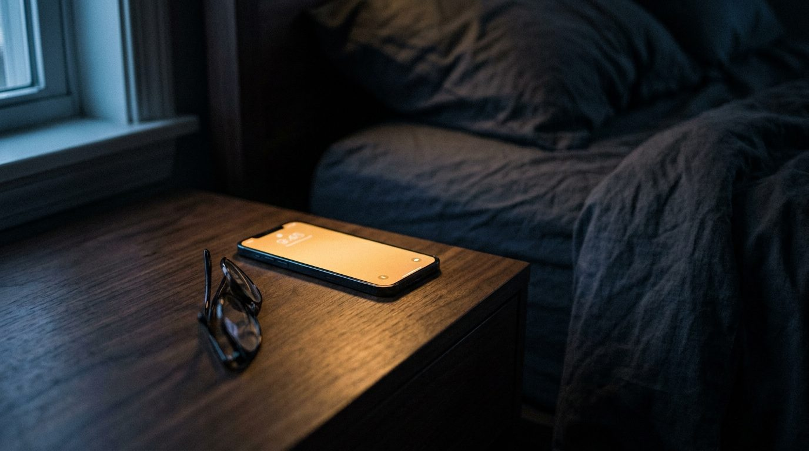
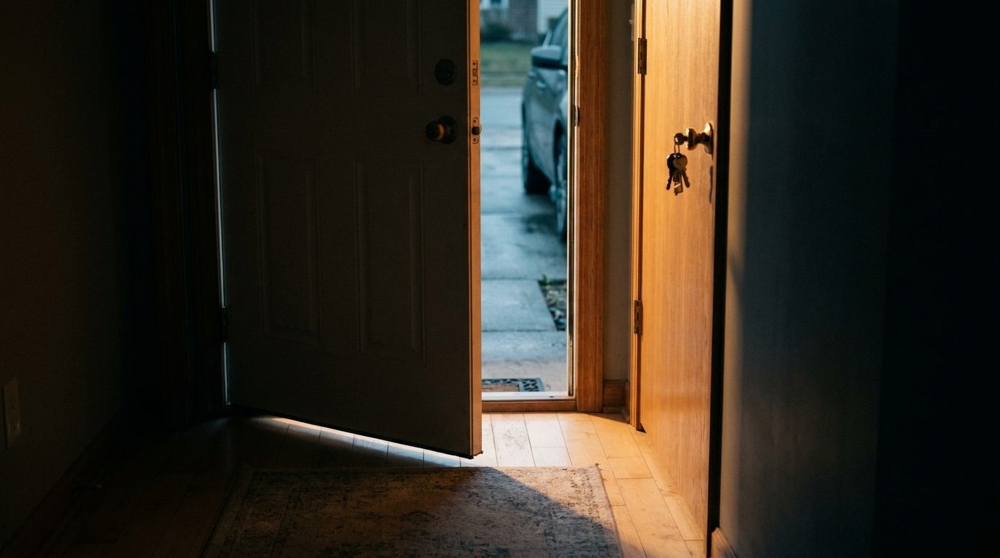

Your alarm rings whenever you told it to, whatever is happening on the road. This one watches traffic and weather all night, learns how long you really take to get out of the door, and moves itself.
Free to download. iPhone and Android.
You say where you are going and when you have to be there. Everything after that happens while you sleep.
Type the address and the time you need to arrive. Add how long you take to get ready. That is the whole setup.
It prices the drive for the morning you are actually driving, checks the forecast, and works backwards to a wake time.
All night. If a lane closes at 3 AM or rain moves in, the alarm slides earlier and tells you why in the morning.
Most apps tell you about traffic once you are already awake and already behind. Here is what this one does instead.
Ask a maps app how long your commute takes at 2 AM and it will cheerfully answer for empty 2 AM roads. That is useless for an 8:15 arrival, and it is what almost everything gives you.
Never Be Late asks a different question: how long will this take at the hour I am actually leaving. On a busy route that gap is the difference between comfortable and sprinting.
This is the part nobody else measures. There is the time you meant to leave, and there is the time you really walked out of the door, and for most of us those are not the same number.
The app notices when you leave home and starts the clock then. So it learns your real drive time separately from your real getting-ready time, and stops blaming the traffic for the ten minutes you spent looking for your keys.

You said thirty minutes to get ready. After a couple of weeks the app knows whether that is true, whether Mondays are worse, and whether you are a person who says thirty and means forty-five.
Then it builds that into your alarm without ever making you admit it out loud.
Weather is not a separate notification you have to interpret at 6 AM. It is folded straight into the wake time, because a wet Tuesday and a dry Tuesday are not the same commute.
Rain, fog, ice, or a clear run. It was accounted for before you opened your eyes.
An alarm that moves itself is only worth trusting if it explains itself. Every adjustment comes with the reasoning in plain English.
"I moved your alarm 18 minutes earlier. There is a 40% chance of freezing rain between 6 and 7, which typically adds 12 minutes to your route. I also noticed you have been running about 6 minutes behind your target departure the last three Tuesdays, so I added a little extra room."
You wake up to the reason, not just a different number. And you can always overrule it.
It rings on your phone's actual alarm channel, survives a reboot, and wakes the device out of deep sleep. It will not be politely ignored.
Start typing a destination and pick it from the list. No copy-pasting addresses at midnight.
Weekdays, weekends, or the two days a week you go into the office. Every alarm keeps its own schedule.
Checks step up as the alarm gets closer: every half hour at first, then every five minutes near the end.
If a route lookup fails or an answer looks wrong, it falls back to a safe estimate. It never gives you time it cannot prove you have.
Every alarm is still yours to set, change or switch off. The AI advises and adjusts. It does not take over.
Download and set alarms for free. The AI engine, the learning and the overnight traffic watching are the paid part.
Free to download. Your first alarm takes about a minute to set.